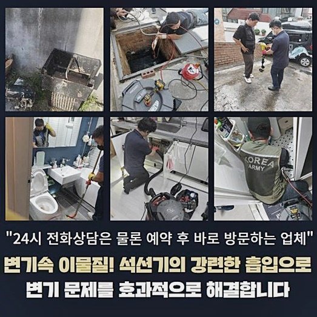
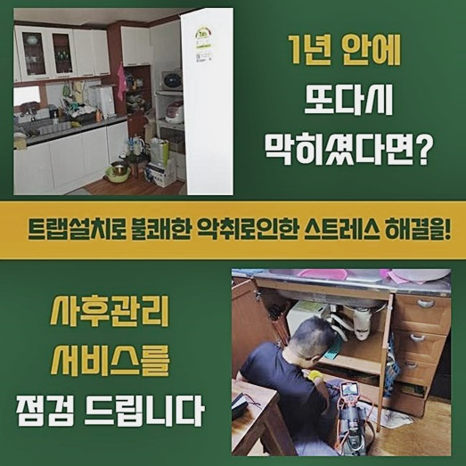
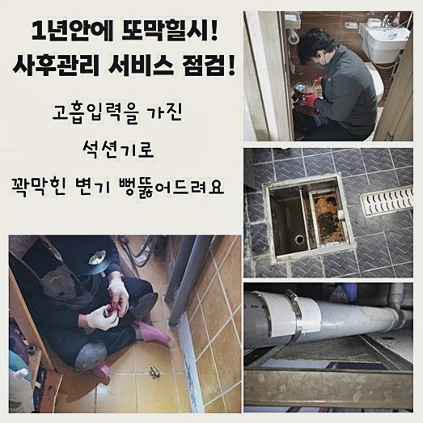
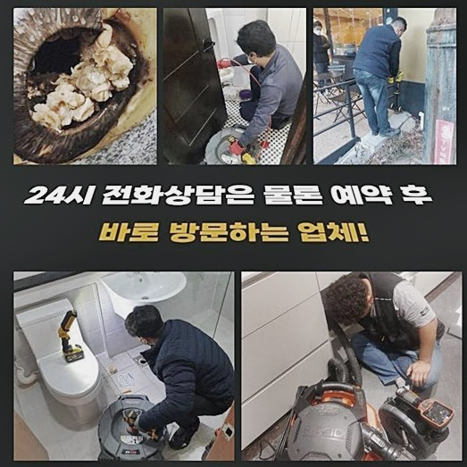
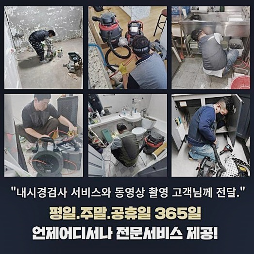
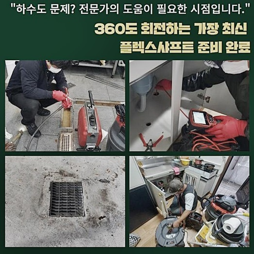

🏠 용인 양지면싱크대배수관역류 포곡읍 집수정청소 배관설비공사
용인 양지면 싱크대막힘 전문 시공 후기

📋 작업 개요
- 위치: 용인 양지면, 양지면, 용인
- 서비스 유형: 싱크대막힘, 하수구막힘, 배관막힘, 집수정막힘, 역류해결, 뚫는업체, 배관청소, 설비공사
- 작업 일시: 2024. 8. 28. 21:23
- 업체명: 하수구수사대 (010-5615-2118)
🔍 문제 상황
용인 양지면싱크대배수관역류 포곡읍 집수정청소 배관설비공사
오늘 알려드릴 작업지는 식당을 하고 계신 고객님께서 연락 주셔서 하수구를 정비해 드렸는데요
손님을 맞이해야 하는 식당을 이어가는 곳이라면 하수구가 고장나는 증세가 심각한 불이익을 가져다 줍니다
정상적인 운영을 할 수 없다보니 금전적 손해가 점진적으로 더 많이 유발되니 얼른 정상화를 시켜주는 스피드가 소중합니다
지역에서 꽤나 입소문이 난 식당 사장님이신 분이셨는데 불현듯 물이 전혀 내려가지 않아서 상당한 골칫거리를 갖고 계신 상태였죠
오늘도 손님들이 올 시간이라 하셔서 뚫음 장치를 올바르게 챙겨서 뚫어야 할 장소로 갔습니다
한시가 급하다 하시는 사장님의 안내에 따라서 문제 발생지로 향해보니 손대야 할 많은 것들이 어렵지 않게 보이더라고요!
현황을 분명하게 분석하기 위한 첫 걸음으로 수돗물을 더 틀어봤는데 약간이라도 물의 흐름이 만들어지지 않는 꽉 막힌 모습이었네요
며칠 전부터 사실 고장 징후를 눈치채셨지만 나중에 처리하자 싶어서 지켜보고 계셨다고 합니다
사소한 막힘 증상이라도 눈에 들어온다면 즉각적으로 프로 배수공에게 문의하시는 조치가 필요합니다
복잡한 공사가 나아갈까봐 긴장하시는 고객님을 안도하도록 달래드리고 현황을 철저히 검토했습니다
어떠한 시공 방법으로 일을 완벽히 처리해 줄지 상세한 시공 플랜을 미리 밝히게 되었네요
폐수의 적절한 처리가 전혀 달성되지 못하니 고인 물을 빼내려고 석션기 가동을 시작했습니다

🔎 원인 분석
💡 전문가 진단: 정밀 진단 장비를 사용하여 슬러지의 고착 여부를 판명하고 타격/세척 작업을 실시했습니다.
진입로만 석션으로 정돈한 뒤 점검 장치를 켜서 배관에 쑥 밀어넣어 삽입을 시도해보았어요
아무래도 확실하게 개선된 내역을 조성하려면 배관로 안을 신중히 들여다보면서 문제를 찾고 추출해야 합니다
단 한번의 시공 만으로도 시원하게 개방시키기 위해서는 하자의 뿌리가 무엇일지 세세하게 체크해야 합니다
문제를 파악하는 눈이 탁월한 전문가라 해도 육안으로 막힌 근원부를 발견하게 되는 것은 불가능에 가까운 일입니다
특수로 고안된 장비들을 두루 써서 문제를 진단하는 과정 자체가 필히 동반되어야 합니다
석션을 해둔 하수관에다 내시경 장치를 투입해서 어떤 물질이 도화선이 되어 막힘이 탄생한 것인지 체크했습니다
기다란 배관의 속내까지 계속 스캔을 해나갔는데 배관 안쪽의 찌꺼기들이 꽉 차 있는 말그대로 고립 상태였어요
게다가 미미한 물이라도 빠져나갈 틈도 없을 정도로 물길을 절대적으로 막아서고 있었죠
하수구 고장의 진짜 원인을 규명하고 정보를 탐색하고서 어떤 일이 일어나고 있는지 모르고 계실 고객님께도 낱낱이 안내를 해 드렸어요
통로가 열려있어야 할 하수관이 갑갑하게 폐쇄되어 있다면 어두운 곳을 비춰줄 카메라로 일단 살펴보는 활동이 필요합니다
제일 효력을 발휘할 수 있는 수단을 실시해서 오류를 불러왔던 측면을 명쾌하게 타파할 수 있는 것이죠!
내시경을 점진적으로 진입을 시켜가면서 심층부의 현황까지도 모두 색출해 냈습니다
식재료를 손질하고 조리하는 식당의 경우는 많은 팜유를 활용해야만 하므로 슬러지가 도화선이 되는 현장들이 정말 많습니다

🔧 작업 과정
이러한 심증적인 추리만으로 무작정 착수하지 않으며 관찰용 내시경을 넣어서 예측의 유효성을 진단하는 돌다리를 두들겨보는 작업에 들어갑니다
안에 머무른 오염원들을 파악을 마치고 나서는 플렉스 샤프트를 동원해서 걸림돌을 없애주어야 했어요
간단한 뚫어뻥이나 스프링을 이용한 작업은 어려운 거냐는 의견을 내비치셨는데요
그리 중중하지 않은 문제라고 판별을 마친다면 쉬운 장치만 적용해서 문제를 극복하려고 최선을 다하고 있어요
많은 현장에서 쓰이는 스프링장비는 유연한 스프링 형상을 하고있는 장치로써 이물질을 부착해서 제거하는 데에 효력을 발휘하게 됩니다
허나 내측의 이물질이 밀집되어 달라붙어 있는 측면에는 안타깝게도 쓸모가 없다고 봐야합니다
이런 측면을 상세하게 충분히 설명을 드렸고 알겠다고 하셔서 곧 샤프트 작업을 시작하게 됐습니다
내시경 먼저 관측 기기를 넣어서가며 배관의 속내까지도 유연한 형상의 기계를 도달시켜 보았는데요
영문 모르게 고장난 하수관로의 현상을 명확하게 볼 수 있도록 도움을 주며 결함들을 철두철미하게 추출할 수 있게 하는 없어선 안 될 장비예요
가볍게 끌어 내는 처리법을 통해서는 원상태로 되돌리기는 힘에 부친다는 추론이 이뤄져서 고형화된 찌꺼기를 파쇄하여 완전 회복된 하수구로 형성하는 게 필요해 보였어요
관로의 벽체에서 이물질들이 남김없이 다뤄지지 않으면 동일한 문제 요소가 재발할게 뻔하기 때문에 번거로움을 막으려면 제대로 된 정리정돈을 해줘야 했습니다
입구 쪽을 다루는 시기에서는 물은 여전히 고여있고 큰 성과가 없는 모습으로 느껴질 수 있습니다
장기간 내부에 머물러 온 부패한 물질들이 뭉쳐져서 떡 하니 자리를 차지하고 있었고 물이 흘러가야 할 통로가 한 치 앞도 볼 수 없을 지경이었죠
이정도라면 완성까지 한참 더 걸리게 되며 공이 훨씬 더 투입됩니다
완성도에 집중하는 게 원칙이니 깨끗하게 정돈될 때 까지 샤프트로 스케일링을 하면서 단계를 수행했습니다
샤프트는 헤드 부근의 쇠사슬로 말라붙은 이물질을 조각내고 끄집어 올려주기도 하면서 내압을 회복시켜서 물의 편안한 배출을 다시 확보하는 것에 커다란 지원이 됩니다
지치지 않는 체력과 올바른 도구 운용으로 정체됐던 하수구 속이 뚫린다는 점을 느낄 수 있었네요
시간이 갈수록 변화가 약간씩 쌓여나가다가 정상적인 물의 흐름을 정상화하게 되어 전체 프로세스까지 무리없이 개선될 수 있었습니다
전반적으로 오염물질들이 절대적으로 소거된 장면을 체크하고 물이 잘 내려가나 검사를 더해보았습니다
영업시설의 수도꼭지를 돌려서 물을 배출해 본 후에 잘 흘러가는지 봤더니 초반과는 다르게 하수가 속경쾌한 물소리와 함께 운반되는 것을 검증할 수 있었네요


✅ 작업 완료
막힌 것만 뚫렸다고 손 떼는 것이 아니고 외관 기능이 다 회복됐나 신중한 검사로 판단하여 결함이 남지 않게 합니다
배관 세정을 조만간 들어가야한다면 막대한 시공 비용을 소모할 수 있으므로 상업시설의 원활한 운영을 확보하기 위해서 최선을 다하고 있습니다
이번 현장같이 설비에 문제 상황이 벌어진다면 영업장소라면 더더욱 피해를 겪을 수 있는 일이죠
따라서 아예 봉인되기 전에 사전관리에 전념하는 것이 다른 가치보다 더 값어치가 있는 활동입니다
이와 같은 준설 오류로 하수구 전문가의 도움이 시급하게 절실하신 분이라면 차일피일 지연시키기 보다는 의뢰를 해주시길 바랍니다
맡겨주신 감사함을 가지고 불러주신 현장이 어디라도 거리낌 없이 찾아뵙겠습니다



⚠️ 주방 싱크대 배관 막힘 예방 수칙
- ✅ 기름기가 묻은 식기나 프라이팬은 설거지 전 키친타올로 반드시 기름때를 닦아내세요.
- ✅ 주기적으로 싱크대 개수대에 뜨거운 물을 가득 받아 한 번에 내려 배관 내부 기름을 씻어내세요.
- ✅ 배수구 거름망을 미세한 필터로 사용하시고 음식물 찌꺼기가 틈으로 새어 들지 않게 관리하세요.
- ✅ 베이킹소다와 식초를 뜨거운 물과 함께 일주일에 한 번씩 부어주면 배관 살균과 막힘 예방에 좋습니다.
💡 핵심 정리
- 확실한 장비 작업(내시경 점검 및 샤프트 스케일링)으로 원인을 뿌리 뽑습니다.
- 작업 후 1년 이내에 동일한 부위 재발 시 100% 무상 A/S 서비스를 보장합니다.
- 서울 · 경기 · 인천 전 지역에 24시간 언제든 긴급 출동할 수 있도록 항시 대기 중입니다.
❓ 자주 묻는 질문 (FAQ)
🚨 용인 양지면 싱크대막힘 문제로 고민이신가요?
정확한 원인 진단과 확실한 시공으로 재발 없는 해결을 약속드립니다.
24시간 긴급 출동 | 서울 · 경기 · 인천 전지역 | 1년 내 재발 시 무상 A/S